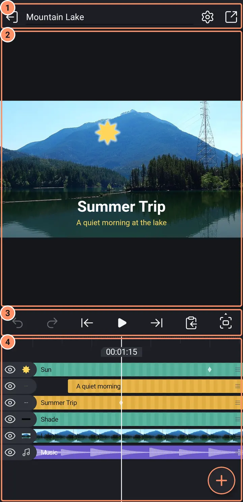
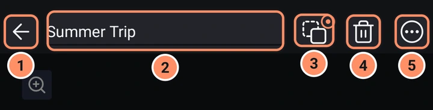
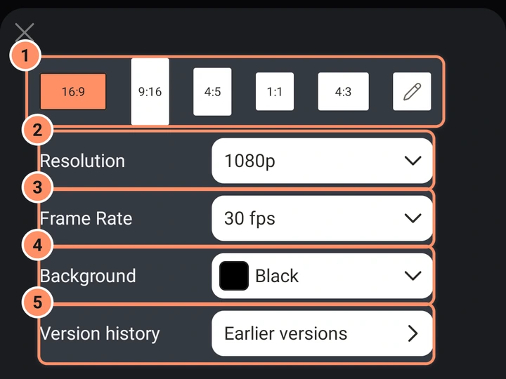
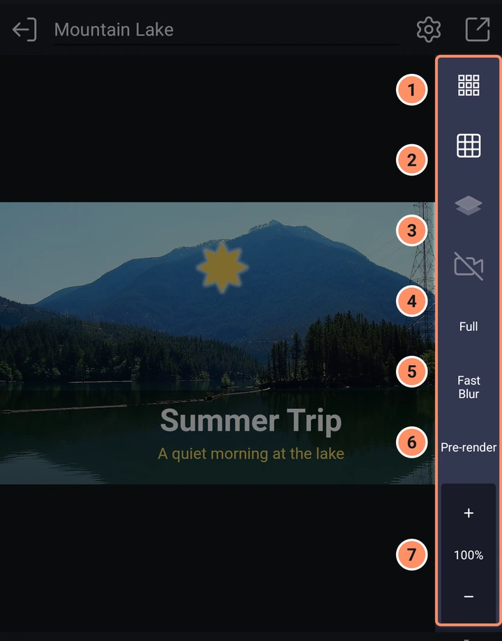
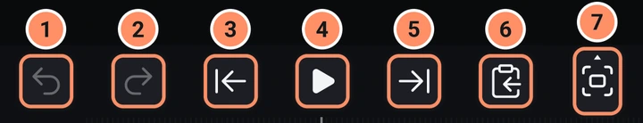

La pantalla del editor
La barra superior, la vista previa, la barra de reproducción y cómo encajan las piezas.
En esta página
El editor tiene cuatro partes, de arriba abajo: la barra superior, la vista previa, la barra de reproducción y la línea de tiempo con sus herramientas. Las tabletas tienen su propia disposición: consulta En una tableta más abajo.

Los cambios se guardan automáticamente un instante después de cada edición. También se guarda una versión del proyecto cada dos minutos mientras editas (consulta Proyectos, copia de seguridad e importación). La capa superior de la línea de tiempo es la capa del frente, y las capas nuevas se añaden al frente.
El botón Atrás del móvil retrocede un nivel cada vez: cierra la franja de vista previa, borra una selección múltiple, cierra el gráfico de suavizado, sale de un efecto abierto, sale de un panel, deselecciona la capa, sale de un grupo abierto y solo entonces sale del editor.
La barra superior
Lo que muestra la barra superior depende de lo que esté seleccionado.
Nada seleccionado
- Salir a la lista de proyectos, a la izquierda.
- El nombre del proyecto. Tócalo para cambiar el nombre del proyecto.
- Ajustes del proyecto (el engranaje): consulta más abajo.
- Exportar y compartir (el icono de compartir): abre la pantalla Exportar.
Una capa seleccionada
- Atrás deselecciona la capa.
- El nombre de la capa. Tócalo para cambiar el nombre; también es la etiqueta de su barra en la línea de tiempo.
- El botón padre (un cuadrado discontinuo, un cuadrado sólido y un círculo pequeño). Muestra «Ninguna» y todas las demás capas. Si eliges una, esa capa pasa a ser la padre: la capa seleccionada la sigue cuando se mueve, gira o escala, y mantiene su sitio en pantalla cuando lo estableces.
- Eliminar capa (la papelera) elimina al instante, sin preguntar. Deshacer la recupera. Las capas hijas de la capa se liberan.
- Menú de capa (tres puntos): consulta Menús de capa y selección múltiple.

Un panel abierto. La barra superior muestra una flecha de Atrás y el nombre del panel, como Transformar, Relleno y color o Efectos.
Dentro de un grupo. Después de Editar grupo, la barra superior muestra la ruta en lugar del nombre del proyecto: el nombre del proyecto y luego el nombre de cada grupo abierto. Toca el nombre del proyecto para volver a todo el proyecto, o el nombre de un grupo para volver a ese grupo. Con una capa seleccionada, una pequeña píldora con el nombre del grupo, junto al nombre de la capa, sale del grupo. El engranaje está oculto dentro de un grupo. Consulta Formas, dibujo y máscaras.
Ajustes del proyecto
El engranaje abre una hoja con las mismas opciones que la hoja de proyecto nuevo: la forma (16:9, 9:16, 4:5, 1:1, 4:3 o una relación personalizada), Resolución, Velocidad de fotogramas y Fondo. Cambiarlas solo cambia el lienzo; las capas no se reescalan. El cambio se puede deshacer. La fila Historial de versiones tiene un botón Versiones anteriores.

En un proyecto de recurso, la hoja también tiene Precomponer y Retemporización: consulta Recursos, plantillas y preajustes.
La vista previa
La vista previa muestra el lienzo. Un fondo transparente se ve como un tablero de ajedrez.
- Seleccionar. Toca una capa para seleccionarla (la capa superior que haya bajo el dedo). Toca un área vacía del lienzo para deseleccionar.
- Mover. Arrastra en cualquier punto de la vista previa para mover la capa seleccionada, no solo sobre la propia capa.
- Escalar. La capa seleccionada tiene un contorno blanco con ocho tiradores redondos. Arrastrar una esquina escala la capa de forma uniforme; arrastrar un lado la estira en esa dirección. Pellizcar con dos dedos también escala. Los tiradores escalan alrededor del pivote (Transformar, Pivote), que permanece quieto.
- Girar. No hay tirador de rotación ni giro con dos dedos para las capas normales. Usa Transformar, Girar (consulta Herramientas de capa).
- Capas de cámara. Arrastrar desplaza la cámara y pellizcar cambia su ángulo de visión.
- Texto. En el editor de texto, el tirador del lateral del marco de texto cambia el ancho de ajuste.
- Guías. Mientras mueves una capa en Transformar, aparecen unas líneas rojas finas cuando se alinea con el centro del lienzo o con otra capa.
Desplazar y ampliar el lienzo
Sin nada seleccionado, dos dedos desplazan y amplían el lienzo (del 1 % al 6400 %). Con una capa seleccionada, toca la pequeña lupa de la esquina superior izquierda de la vista previa para activar el modo de desplazamiento y zoom; después, dos dedos amplían el lienzo mientras un dedo sigue moviendo la capa. Toca dos veces con dos dedos para volver al 100 % y otra vez para regresar a la vista anterior.
La franja de vista previa
El último botón de la barra de reproducción (Modo de vista previa) abre una franja estrecha en el borde derecho de la vista previa con estos botones, de arriba abajo.
- Vista previa de píxeles muestra los píxeles del proyecto con bordes nítidos; es útil cuando amplías.
- Cuadrícula superpone una cuadrícula cada 40 píxeles del proyecto.
- Aislar las capas seleccionadas oculta todas las demás capas. Toca otra vez para dibujar las otras capas con la mitad de opacidad y una tercera vez para desactivarlo.
- Vista de cámara mira a través de la capa de cámara (disponible cuando el proyecto tiene una).
- Completa, Mitad o Cuarta parte: la calidad de la vista previa. Una calidad más baja es más rápida en un móvil lento y no cambia la exportación. Es el mismo ajuste que Calidad de la vista previa en Ajustes.
- Desenfoque rápido o Desenfoque completo: cómo se previsualizan los efectos de desenfoque de movimiento. Rápido es una aproximación; Completo es preciso y más lento. Las exportaciones siempre son precisas.
- Zoom: botones de más y menos y el porcentaje actual.

Pre-renderizar, entre Desenfoque rápido y Zoom, renderiza el proyecto por delante desde el cabezal de reproducción hasta el final (o todo lo que quepa en memoria y almacenamiento), para que un proyecto pesado se reproduzca con fluidez. Una nota en la parte superior de la vista previa muestra el progreso con un botón Cancelar. Mientras la reproducción usa los fotogramas pre-renderizados, una pequeña etiqueta Pre-renderizado aparece en la esquina superior derecha de la vista previa. Cualquier cambio en el proyecto hace que la pre-renderización quede desactualizada: el botón Pre-renderizar de la franja cambia de color y una nota ofrece Pre-renderizar de nuevo. Cuando esté lista, toca Pre-renderizar para ver el tiempo que cubre, o manténlo pulsado para quitarlo. Incluso sin Pre-renderizar, la aplicación prepara los fotogramas alrededor del cabezal de reproducción cuando te detienes (consulta Ajustes); una línea verde fina en la parte inferior de la regla de tiempo los marca.
Otras cosas en la vista previa
- El botón redondo Animar de la esquina inferior derecha aparece cuando hay una capa visual seleccionada: abre las animaciones Entrada, Salida y Bucle. Consulta Transiciones y animaciones.
- La nota Deshecho/Rehecho de la parte inferior muestra qué hizo el último deshacer o rehacer.
La barra de reproducción
Siete botones, de izquierda a derecha.
- Deshacer y 2. Rehacer. La aplicación guarda hasta 200 pasos. Un arrastre completo o un movimiento de control deslizante cuenta como un paso. Cada deshacer o rehacer muestra una nota breve como «Deshecho: Mover».
- Retroceder y 5. Avanzar saltan al punto de parada anterior o siguiente. Con nada seleccionado, los puntos de parada son el inicio y el final del proyecto; con una capa seleccionada, son su inicio, su final y sus fotogramas clave. Los marcadores siempre son puntos de parada.
- Reproducir / Pausar. Mantén pulsado Reproducir mientras está detenido para activar o desactivar la reproducción en bucle. Si reproduces desde el final, vuelve a empezar desde el principio.
- Copiar y pegar abre un menú para duplicar, copiar, pegar y guardar preajustes: consulta Menús de capa y selección múltiple.
- Modo de vista previa abre la franja de vista previa.

La línea fina bajo la barra es un medidor de nivel en directo mientras se reproduce el proyecto: la mitad izquierda muestra el canal izquierdo y la mitad derecha el derecho, en verde, luego amarillo y después rojo a medida que el sonido aumenta. Una mitad parpadea en rojo si su canal se satura.
Selección múltiple
Mantén pulsado el ojo o la zona del nombre de la fila de una capa y luego desliza hacia arriba o hacia abajo para seleccionar varias filas a la vez; después, un toque activa o desactiva filas. La barra superior cambia de color y muestra botones de agrupar, efectos, eliminar y alinear, y aparece una barra en la parte inferior con comandos de temporización de clips. Todos se describen en Menús de capa y selección múltiple.
En una tableta
Una tableta usa una disposición más ancha siempre que su pantalla es lo bastante ancha, en vertical y en horizontal (la mayoría de las tabletas de 10 y 11 pulgadas en ambas posiciones, las más pequeñas cuando se sujetan en horizontal).
- Los paneles y las herramientas de una capa seleccionada se abren en una columna junto a la vista previa, así que nunca tapan la línea de tiempo.
- La línea de tiempo ocupa todo el ancho bajo la vista previa. En vertical ocupa la parte inferior de la pantalla, así que caben muchas más capas.
- Las herramientas caben en una sola página, en dos a cuatro columnas.
En una tableta más pequeña sujeta en vertical, el editor se parece al del móvil, y hojas como el selector de color, los preajustes, Acerca de y Ayuda se abren como una tarjeta en el centro en lugar de llenar la pantalla. La pantalla de inicio también tiene una cuadrícula de proyectos y plantillas y pone las herramientas una al lado de otra: consulta La pantalla de inicio.